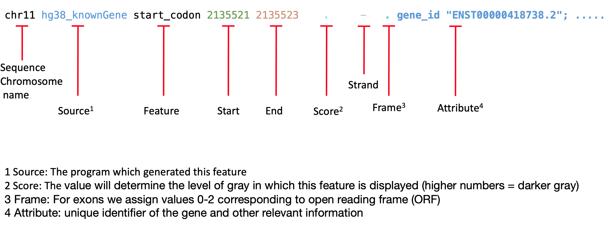

Annotation data
Workshop on RNA-Seq
1 Genomic data
Reference genomic data for your projects are available from Ensembl. This is usually the latest build of the genome, transcriptome etc as well as the annotations in GTF or GFF format. Most common organisms are available from ensembl.org. You can select the organism and then click on Download FASTA/Download GTF/GFF which takes you to the FTP site.
You can also go directly to their FTP site https://www.ensembl.org/info/data/ftp/index.html where you can select the type of data you need, and then select the organism. For eg; homo_sapiens, under which you find cdna, cds, dna, dna_index, ncrna and pep. Under dna, the FASTA files are available as full genome or as separate chromosomes. Each of them are again available as regular (repeat content as normal bases), soft-masked (sm, repeat content in lowercase) or repeat-masked (rm, repeat content as Ns). Full genomes are also available as primary assembly or top-level. Primary assembly is what most people would need. The top-level is much larger in size and contains non-chromosomal contigs, patches, haplotypes etc. This is significantly larger in size compared to the primary assembly.
Clades such as metazoa, protists, bacteria, fungi and plants are available through separate ensembl websites. These are listed on http://ensemblgenomes.org/.
1.1 GTF/GFF
The GTF (General Transfer Format) format is one line per feature, described in 9 columns of data.
The GFF (General Feature Format) (GFF3) is identical to GTF version 2.

For conversions and extracting features from either of them you can use AGAT.
2 Biomart
By using biomaRt you can access three main databases available in Ensembl (core, compara, and variation). Ensembl uses MySQL to store information and the tables within each database is accessible and searchable by using R package biomaRt.
Figure 2.1: Ensembl core schema.
2.1 Genes
In core database we can download annotation data. Annotations refer to known features (verified experimentally or predicted) in the genome. Usually, our features of interest in RNA-Seq are genes, their IDs, position in the genome, gene biotype (protein coding, non-coding etc) etc. We will also use the dplyr package to pipe data through functions.
library(biomaRt)
listMarts() biomart version
1 ENSEMBL_MART_ENSEMBL Ensembl Genes 109
2 ENSEMBL_MART_MOUSE Mouse strains 109
3 ENSEMBL_MART_SNP Ensembl Variation 109
4 ENSEMBL_MART_FUNCGEN Ensembl Regulation 109We will use the code below to find the name of mouse ensembl genes dataset under ensembl mart.
mart <- useMart("ENSEMBL_MART_ENSEMBL")
ds <- as.data.frame(listDatasets(mart=mart))
# find all rows in dataset 'ds' where column 'description' contains the string 'mouse'
ds %>% filter(grepl("mouse",tolower(description))) dataset description version
1 mcaroli_gene_ensembl Ryukyu mouse genes (CAROLI_EIJ_v1.1) CAROLI_EIJ_v1.1
2 mmurinus_gene_ensembl Mouse Lemur genes (Mmur_3.0) Mmur_3.0
3 mmusculus_gene_ensembl Mouse genes (GRCm39) GRCm39
4 mpahari_gene_ensembl Shrew mouse genes (PAHARI_EIJ_v1.1) PAHARI_EIJ_v1.1
5 mspicilegus_gene_ensembl Steppe mouse genes (MUSP714) MUSP714
6 mspretus_gene_ensembl Algerian mouse genes (SPRET_EiJ_v1) SPRET_EiJ_v1
7 pmbairdii_gene_ensembl Northern American deer mouse genes (HU_Pman_2.1) HU_Pman_2.1Now that we know the name of the dataset, we can list all the columns (filters) in this dataset.
mart <- useMart("ENSEMBL_MART_ENSEMBL")
mart <- useDataset(mart=mart,dataset="mmusculus_gene_ensembl")
la <- listAttributes(mart=mart)
head(la) name description page
1 ensembl_gene_id Gene stable ID feature_page
2 ensembl_gene_id_version Gene stable ID version feature_page
3 ensembl_transcript_id Transcript stable ID feature_page
4 ensembl_transcript_id_version Transcript stable ID version feature_page
5 ensembl_peptide_id Protein stable ID feature_page
6 ensembl_peptide_id_version Protein stable ID version feature_pageOne can also search for attributes of interest.
searchAttributes(mart=mart,pattern="entrez") name description page
52 entrezgene_trans_name EntrezGene transcript name ID feature_page
65 entrezgene_description NCBI gene (formerly Entrezgene) description feature_page
66 entrezgene_accession NCBI gene (formerly Entrezgene) accession feature_page
67 entrezgene_id NCBI gene (formerly Entrezgene) ID feature_pageWe create a vector of our columns of interest.
myattributes <- c("ensembl_gene_id",
"entrezgene_id",
"external_gene_name",
"chromosome_name",
"start_position",
"end_position",
"strand",
"gene_biotype",
"description")We then use this to download our data. Note that this can be a slow step.
mart <- useMart("ENSEMBL_MART_ENSEMBL")
mart <- useDataset(mart=mart,dataset="mmusculus_gene_ensembl")
bdata <- getBM(mart=mart,attributes=myattributes,uniqueRows=T,
useCache=FALSE)
head(bdata) ensembl_gene_id entrezgene_id external_gene_name chromosome_name start_position
1 ENSMUSG00000064336 NA mt-Tf MT 1
2 ENSMUSG00000064337 NA mt-Rnr1 MT 70
3 ENSMUSG00000064338 NA mt-Tv MT 1025
4 ENSMUSG00000064339 NA mt-Rnr2 MT 1094
5 ENSMUSG00000064340 NA mt-Tl1 MT 2676
6 ENSMUSG00000064341 17716 mt-Nd1 MT 2751
end_position strand gene_biotype
1 68 1 Mt_tRNA
2 1024 1 Mt_rRNA
3 1093 1 Mt_tRNA
4 2675 1 Mt_rRNA
5 2750 1 Mt_tRNA
6 3707 1 protein_coding
description
1 mitochondrially encoded tRNA phenylalanine [Source:MGI Symbol;Acc:MGI:102487]
2 mitochondrially encoded 12S rRNA [Source:MGI Symbol;Acc:MGI:102493]
3 mitochondrially encoded tRNA valine [Source:MGI Symbol;Acc:MGI:102472]
4 mitochondrially encoded 16S rRNA [Source:MGI Symbol;Acc:MGI:102492]
5 mitochondrially encoded tRNA leucine 1 [Source:MGI Symbol;Acc:MGI:102482]
6 mitochondrially encoded NADH dehydrogenase 1 [Source:MGI Symbol;Acc:MGI:101787]We find that there are several duplicates for all the IDs. This needs to be fixed when this information is to be used downstream.
sum(duplicated(bdata$ensembl_gene_id))
sum(duplicated(bdata$entrezgene_id))
sum(duplicated(bdata$external_gene_name))[1] 375
[1] 29854
[1] 2130# arrange table by chr name and start position
bdata <- dplyr::arrange(bdata,chromosome_name,start_position)
write.table(bdata,"./data/mouse_genes.txt",sep="\t",dec=".",row.names=FALSE,quote=FALSE)
head(bdata) ensembl_gene_id entrezgene_id external_gene_name chromosome_name start_position end_position strand gene_biotype
1 ENSMUSG00000102693 NA 4933401J01Rik 1 3143476 3144545 1 TEC
2 ENSMUSG00000064842 115487594 Gm26206 1 3172239 3172348 1 snRNA
3 ENSMUSG00000051951 497097 Xkr4 1 3276124 3741721 -1 protein_coding
4 ENSMUSG00000102851 NA Gm18956 1 3322980 3323459 1 processed_pseudogene
5 ENSMUSG00000103377 NA Gm37180 1 3435954 3438772 -1 TEC
6 ENSMUSG00000104017 NA Gm37363 1 3445779 3448011 -1 TEC
description
1 RIKEN cDNA 4933401J01 gene [Source:MGI Symbol;Acc:MGI:1918292]
2 predicted gene, 26206 [Source:MGI Symbol;Acc:MGI:5455983]
3 X-linked Kx blood group related 4 [Source:MGI Symbol;Acc:MGI:3528744]
4 predicted gene, 18956 [Source:MGI Symbol;Acc:MGI:5011141]
5 predicted gene, 37180 [Source:MGI Symbol;Acc:MGI:5610408]
6 predicted gene, 37363 [Source:MGI Symbol;Acc:MGI:5610591]2.2 Transcript
Here we download transcript to gene mappings. Notice that we can specify the mart and dataset in the useMart() function.
mart <- useMart(biomart="ensembl",dataset="mmusculus_gene_ensembl")
t2g <- getBM(attributes=c("ensembl_transcript_id","ensembl_gene_id","external_gene_name"),mart=mart,useCache=FALSE)
write.table(t2g,"./data/mouse_transcripts.txt",sep="\t",dec=".",row.names=F,quote=F)
head(t2g) ensembl_transcript_id ensembl_gene_id external_gene_name
1 ENSMUST00000082387 ENSMUSG00000064336 mt-Tf
2 ENSMUST00000082388 ENSMUSG00000064337 mt-Rnr1
3 ENSMUST00000082389 ENSMUSG00000064338 mt-Tv
4 ENSMUST00000082390 ENSMUSG00000064339 mt-Rnr2
5 ENSMUST00000082391 ENSMUSG00000064340 mt-Tl1
6 ENSMUST00000082392 ENSMUSG00000064341 mt-Nd1The transcipt information file is saved to a file and will be used in the lab on Kallisto.
2.3 Gene ontology
Similarly, we can get entrez gene ID to GO ID relationships. List all the GO related filters:
mart <- biomaRt::useMart(biomart="ensembl",dataset="mmusculus_gene_ensembl")
la <- listAttributes(mart=mart)
# find all rows in dataset 'lf' where column 'name' contains the string 'go'
head(la[grepl("go",tolower(la$name)),]) name description
18 with_go With GO ID(s)
19 with_goslim_goa With GOSlim GOA ID(s)
70 go GO ID(s) [e.g. GO:0000002]
71 goslim_goa GOSlim GOA ID(s) [e.g. GO:0000003]
169 go_parent_term Parent term accession
170 go_parent_name Parent term name
171 go_evidence_code GO Evidence code
212 with_cgobio_homolog Orthologous Channel bull blenny Genes
233 with_cldingo_homolog Orthologous Dingo Genes
257 with_ggorilla_homolog Orthologous Gorilla Genesmart <- biomaRt::useMart(biomart="ensembl",dataset="mmusculus_gene_ensembl")
bdata <- getBM(mart=mart,attributes=c("entrezgene_id","go_id","go_linkage_type"),uniqueRows=T,useCache=FALSE)
write.table(bdata,"./data/mouse_go.txt",sep="\t",dec=".",row.names=FALSE,quote=FALSE) entrezgene_id go_id go_linkage_type
1 NA GO:0006414 TAS
2 NA GO:0030533 IEA
3 NA GO:0030533 ISS
4 NA GO:0005739 TAS
5 NA GO:0000028 TAS
6 NA GO:0006412 TAS2.4 ID conversion
We can also take a quick look at converting IDs. It is often desirable to convert a certain gene identifier to another (ensembl gene ID, entrez gene ID, gene ID). Sometimes, it may be necessary to convert gene IDs of one organism to another. biomaRt has a convenient function for this called getLDS().
Here is an example where we convert a few mouse ensembl IDs to Human Hugo gene IDs.
mouse_genes <- c("ENSMUSG00000035847","ENSMUSG00000000214")
human <- useMart("ensembl", dataset = "hsapiens_gene_ensembl")
mart <- useMart("ensembl", dataset = "mmusculus_gene_ensembl")
attributes = c("external_gene_name", "ensembl_gene_id", "description")
attributesL = c("hgnc_symbol", "ensembl_gene_id")
getLDS(attributes, attributesL = attributesL, uniqueRows = T, filters = 'ensembl_gene_id', values= mouse_genes, mart = mart, martL = human)If you get this error:
Error: biomaRt has encountered an unexpected server error. Consider trying one of the Ensembl mirrors (for more details look at ?useEnsembl)
Try the following chunk instead.
mouse_genes <- c("ENSMUSG00000035847","ENSMUSG00000000214")
human <- useMart("ensembl", dataset = "hsapiens_gene_ensembl", host = "https://dec2021.archive.ensembl.org/")
mart <- useMart("ensembl", dataset = "mmusculus_gene_ensembl", host = "https://dec2021.archive.ensembl.org/")
attributes = c("external_gene_name", "ensembl_gene_id", "description")
attributesL = c("hgnc_symbol", "ensembl_gene_id")
getLDS(attributes, attributesL = attributesL, uniqueRows = T, filters = 'ensembl_gene_id', values= mouse_genes, mart = mart, martL = human) Gene.name Gene.stable.ID Gene.description HGNC.symbol Gene.stable.ID.1
1 Ids ENSMUSG00000035847 iduronate 2-sulfatase [Source:MGI Symbol;Acc:MGI:96417] IDS ENSG00000010404
2 Ids ENSMUSG00000035847 iduronate 2-sulfatase [Source:MGI Symbol;Acc:MGI:96417] ENSG00000241489
3 Th ENSMUSG00000000214 tyrosine hydroxylase [Source:MGI Symbol;Acc:MGI:98735] TH ENSG00000180176